With 6 years of experience across ed-tech and marketplaces, I design and ship growth, platform, and AI-assisted learning products. I combine systems thinking, interaction design, and rapid prototyping to deliver measurable user and business outcomes.
Lead Product Designer✦Scaler · Ex CARS24✦6 Years of Experience✦Design Ops · Growth · Learning✦Lead Product Designer✦Scaler · Ex CARS24✦6 Years of Experience✦Design Ops · Growth · Learning✦
Lead Product Designer✦Scaler · Ex CARS24✦6 Years of Experience✦Design Ops · Growth · Learning✦Lead Product Designer✦Scaler · Ex CARS24✦6 Years of Experience✦Design Ops · Growth · Learning✦
Built because the problem was worth solving properly
Self-initiated systems I designed and built end to end.
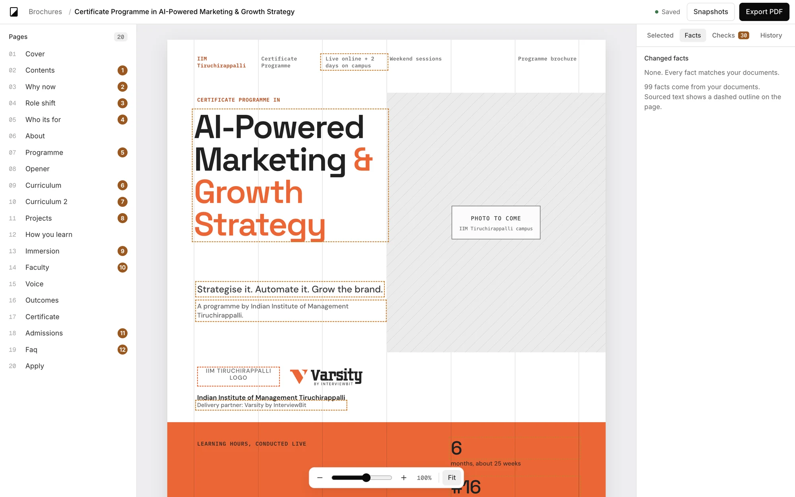
Pilot
Brochure Studio
Every programme brochure used to start from a blank file. Someone read the whole proposal, pulled out the facts, chased logos and laid out each page by hand. Now a designer uploads the proposal and answers only what the document leaves out. They pick a design family, and an agent writes, designs and checks every page. The draft opens in an editor where the designer finishes the copy and images, and every change is tracked.
One upload replaced the brief, the copy pass and the first layout
A designed draft in 8–12 minutes · a 20-page brochure for IIM Tiruchirappalli
97 facts traced to their source · 0 facts guessed · gaps marked "To confirm"
10 design families, built and tested by design · 0 engineering hours
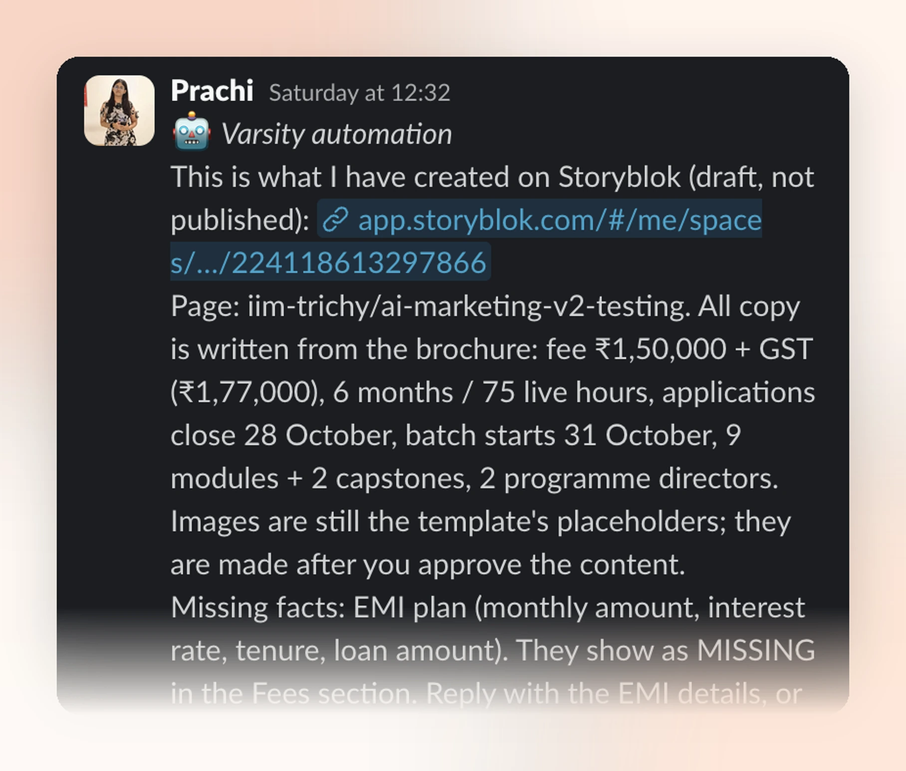
Live
Varsity page automation
Every Varsity program page used to need someone to sit through the same long chat with Claude. Now one Slack form starts the work: a scheduled runner picks up the request, drafts all 20 sections into Storyblok from the brochure, and posts each step in the thread. People step in only to review and approve.
One Slack form replaced the repeated requirements chat
Picked up and drafting within 10 minutes, no chat to run
20 sections from the brochure · 0 facts guessed · 0 pages auto-published
Built and tested by design · 0 engineering hours
[ 03 / 03 ]Experience
Journey so far
From paid learning experiences to leading growth, platform, and AI-assisted learning systems.
Lead Product Designer
Scaler (InterviewBit Technologies) · Full-time
Jan 2026 - Present
Bengaluru, India
Lead product direction across growth, publishing, and AI-assisted learning, turning ambiguous business goals into clear strategy and scalable systems. Partner with Product, Engineering, Research, Marketing, and SEO to align priorities, make trade-offs, and guide work from discovery through launch.
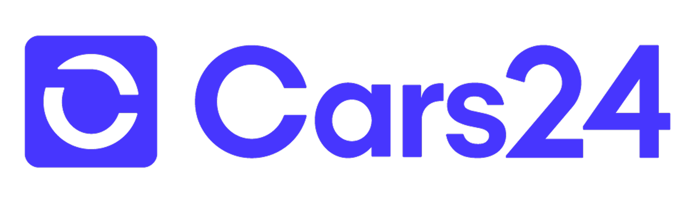
Senior Product Designer
CARS24 · Full-time
Apr 2025 - Dec 2025
Gurugram, India
Owned end-to-end design across dealer, consumer, and internal operations workflows. Partnered with Product, Engineering, Sales, Operations, dealer partners, and yard and hub teams to balance customer and operational needs and move complex initiatives from discovery through rollout.
Senior Product Designer
Scaler (InterviewBit Technologies) · Full-time
Apr 2021 - Apr 2025
Bengaluru, India
Progressed from Product Designer I and Product Designer II
Led design across conversion, onboarding, paid learning, assessments, and learner progression while growing from Product Designer to Senior Product Designer. Partnered across Product, Engineering, Research, Growth, Sales, Academic, and Career teams to frame problems, align priorities, and build shared product direction through discovery and experimentation.
Designing conversion systems for high-intent learners.
Redesigned the growth funnel for learners already showing intent: discovery, live-session attendance, callback requests, onboarding, and trust-building moments before paid enrollment.
EdTech Growth
Lead Product Designer
Growth, Product, Sales
2021 - 2026
Overview
Scaler's growth funnel already had high-intent learners coming from ads, webinars, referrals, and program pages. The work was about making that intent visible across discovery, reminders, callback requests, onboarding, and trust-building moments before paid enrollment.
The design system connected scattered conversion surfaces into a clearer journey, helping learners understand fit faster and giving downstream teams better context for every conversation.
DiscoverMake program fit, outcomes, and urgency clearer before a learner reaches a sales touchpoint.
ConvertUse intent signals to trigger better reminders, callbacks, and enrollment conversations.
10% to 18%Live class attendance improved after reminder and expectation-setting redesigns.
4.34% to 15%Callback conversion increased through sharper intent capture and lead-quality moments.
51.5%Directory conversion from an alumni-led trust and discovery experience.
+23.9%Paid enrollments improved by connecting funnel signals into a clearer growth system.
The problem was not traffic. It was invisible intent.
Scaler already had learners entering from ads, webinars, referrals, and program pages. The friction was in understanding who was ready to act, what they needed next, and which moments should nudge them toward a live class, callback, or enrollment decision.
Fragmented journeys
Learners moved across discovery pages, forms, reminders, sessions, and counseling without one consistent conversion logic.
Weak intent capture
Forms and CTAs collected contact details, but missed readiness, goal, timing, and program-fit signals.
Attendance drop
Interested learners signed up for live sessions, then lost context before the event or forgot why it mattered.
Trust gap
High-intent learners needed proof from alumni outcomes and career relevance before committing to the next step.
How might we make learner intent visible before a sales conversation begins?This question shaped the system: every surface had to clarify motivation, reduce hesitation, and pass better context downstream.
01 / Discovery system
Turn program browsing into structured decision making.
What changed
Reframed program pages around outcomes, eligibility, and learner goals.
Created clearer paths from exploration to live class registration.
Added trust cues through alumni, salary, and role-context proof points.
Why it worked
Learners could self-qualify faster.
Sales conversations started with richer context.
Repeatable sections made growth experiments easier to ship.
02 / Reminder and attendance loop
Make the learner remember the value, not just the event time.
Signals used
Registration source, selected program, career goal, and urgency.
Live-session reminders mapped to motivation and objection handling.
Clear next steps before and after the class.
Result
Attendance moved from 10% to 18%.
Learners arrived with better expectations.
Follow-up moments felt contextual instead of generic.
03 / Callback conversion
Ask for the conversation when intent is highest.
Design decision
Moved callback prompts closer to proof, clarity, and commitment moments.
Reduced form hesitation with simpler fields and clearer expectations.
Six live pages reached 9.05% visitor-to-lead conversion while delivery moved from days to hours.
A governed Storyblok publishing system that enabled Marketing and SEO to launch independently, converted 24,541 visitors into 2,220 leads across six pages, and progressed the first two program launches to 58 payments by Jul 31, 2026.
Prachi Pandey
Varsity by InterviewBit
Storyblok · EU space
Proven · 6 pages live
Overview
We converted a custom, multi-day landing-page build into a repeatable publishing system. An idea is shaped on Claude, styled in Figma, wired into Storyblok components by engineering, set to a house style by design, and then generated from a single prompt through reusable skill files.
The finished system is handed to Marketing and SEO, who can run and optimize each program page independently to lift V2L (Volume-to-Lead) and L2P (Lead-to-Payment), without waiting on design or engineering.
Builder skill
storyblok-program-page turns a partner brochure into a full, on-brand, published program page in one prompt, with approval gates and image generation.
Go-live skill
storyblok-site-audit checks images, SEO, social cards, structured data, and brand safety inside the CMS before publish.
Rendered-page skill
varsity-page-audit checks the live page with link audits, CTA/modal tests, and tier-1/tier-2 learner comprehension review.
The problem was not one page. It was rebuilding the same system for every program.
Varsity launches certificate programs with multiple partner institutions such as IIT Delhi and IIM Trichy. Every program page is structurally identical but content-different: hero, overview, 12-module / 4-phase curriculum, objectives, tools, campus immersion, certificate, pricing, EMI, FAQs, lead forms, custom illustrations, partner logos, metadata, and social presence.
Cost
What it looked like
Time
Every institution or program restarted the same multi-day build from scratch.
Inconsistency
Section structure, image style, copy depth, and tone drifted from page to page.
Go-live risk
Heavy images, missing alt text, no social card, stale placeholders, and cross-brand leaks could reach production.
Growth bottleneck
Marketing and SEO could not keep testing campaign variants without design or engineering dependency.
Goal: make a program page a repeatable product, not a one-off project.The system had to preserve design quality, keep humans in the right review loops, and hand ownership to the teams responsible for growth.
Guiding principles.
Five beliefs shaped the system and decided where automation should help versus where human judgment should stay in control.
Codify the process
The reusable asset is the workflow: format, style, gotchas, safety rails, and release checks. Not a static design file.
Skill file as handoff
The skill file lets another team reproduce months of design and engineering decisions in one prompt.
Design for Storyblok
Storyblok stores URL-baked assets, so releases require safe reference swaps inside the story.
Human gates
Humans review content and imagery, while mechanical steps run without unnecessary approvals.
Optimize for funnel
The system exists to move V2L and L2P, not just to publish faster.
Step 1
Ideate
Ideate on Claude with throwaway HTML prototypes, decide sections, story, order, tone, overview structure, and smaller-viewport above-the-fold behavior.
Step 2
Design
Design the screens in Figma, then translate them into reusable Storyblok bloks, nested curriculum components, and root-level forms.
Step 3
Build
Extract hard facts from partner brochures, expand thin modules into structured curriculum content, generate copy, imagery, uploads, and CDN wiring.
Step 4
Ship
Publish under the institution folder, go live clean with SEO and brand-safety checks, then hand off to Marketing and SEO for independent iteration.
Prototype
What it explored
index.html
The original Varsity by InterviewBit layout.
index-supermemory.html
A cleaner, editorial, content-forward direction.
index-clickup.html
A bold, conversion-heavy marketing direction.
index-syncup.html
A product-led narrative direction.
program.html
The first dedicated program page, separate from the home page.
The Figma system covered the full enrollment funnel.
The file Varsity Design includes Final Screens for desktop 1440 px and mobile 360 px, plus supporting legal and lead-capture screens.
Figma screen / artboard
What it is
Home page (desktop + mobile)
The Varsity landing page: hero, social proof, programs, and footer in desktop and mobile.
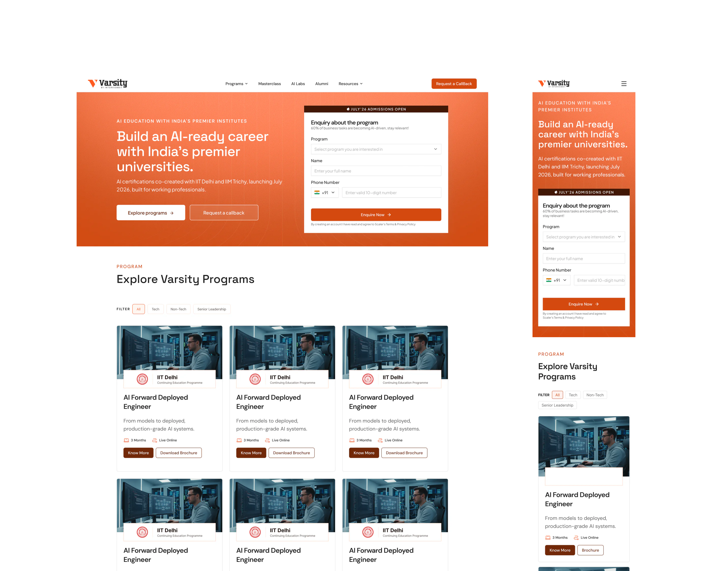
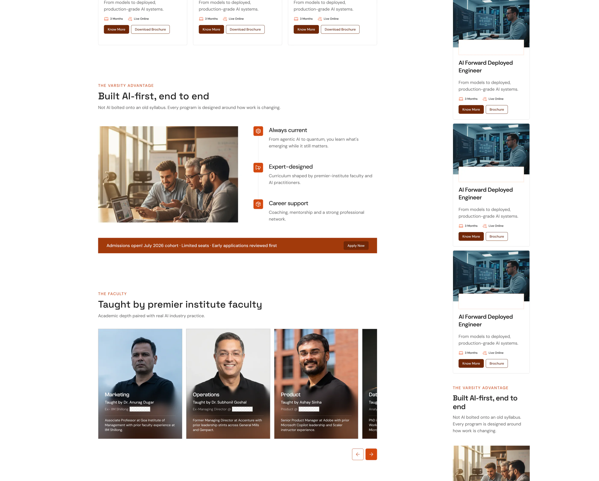
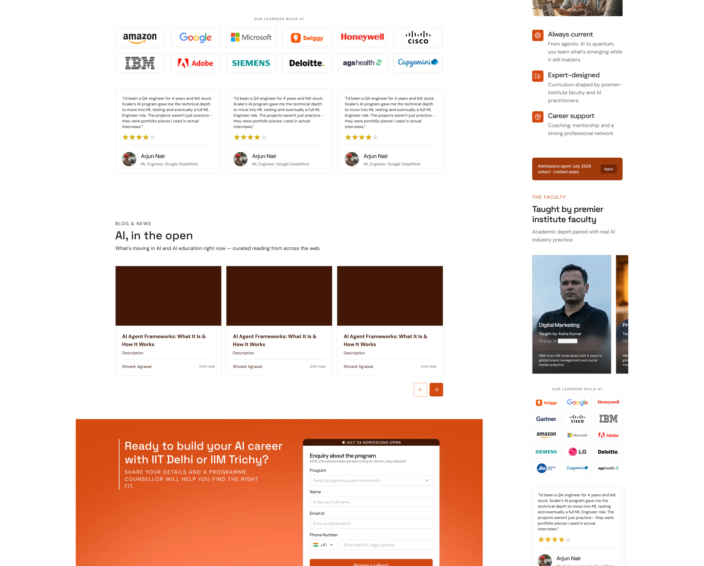
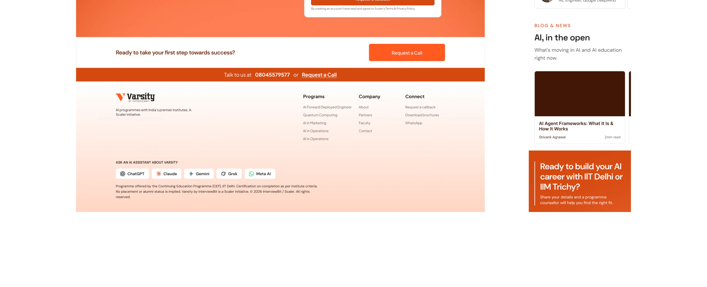
Program page (desktop + mobile)
The 18-section program template: hero, curriculum, faculty, pricing, FAQ, and lead surfaces.
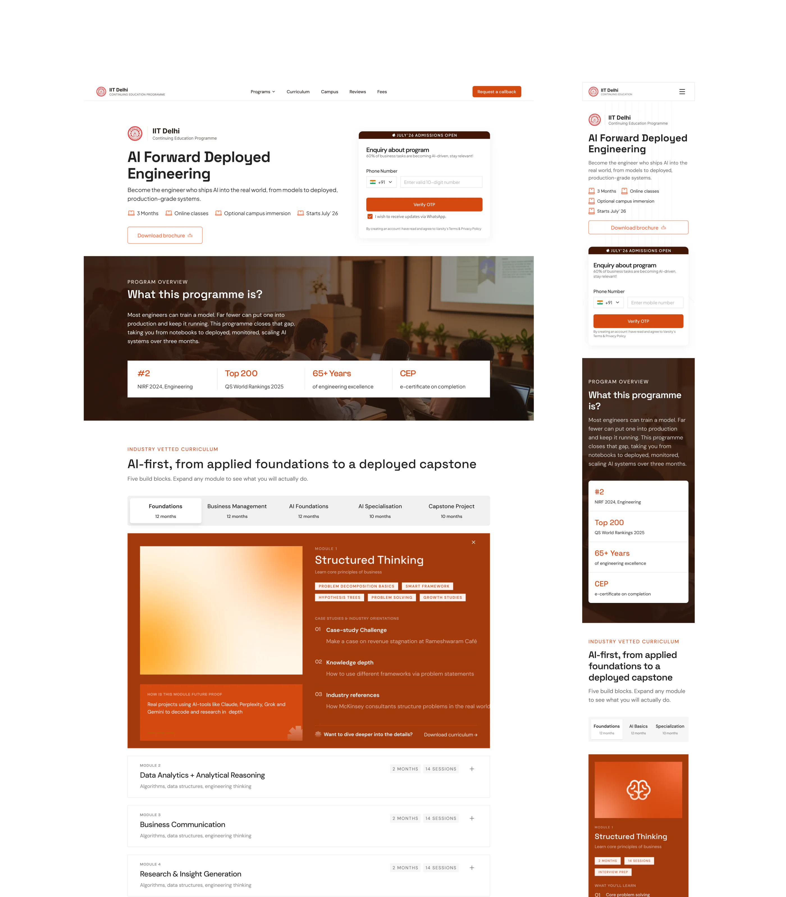
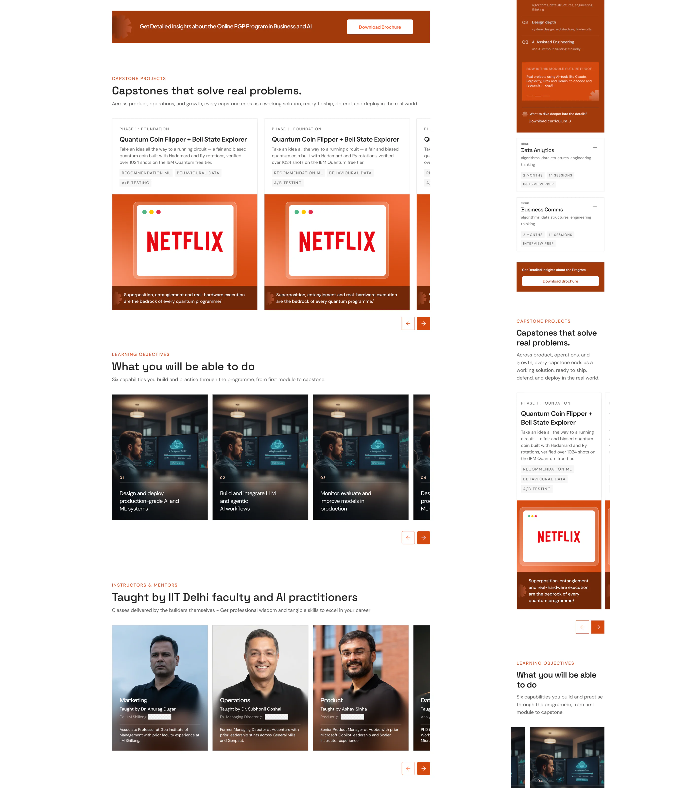
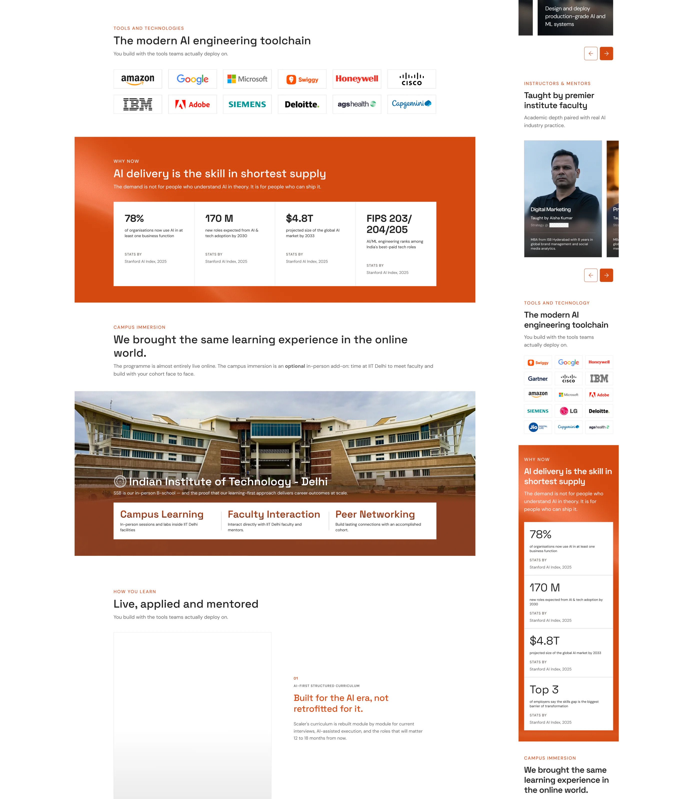
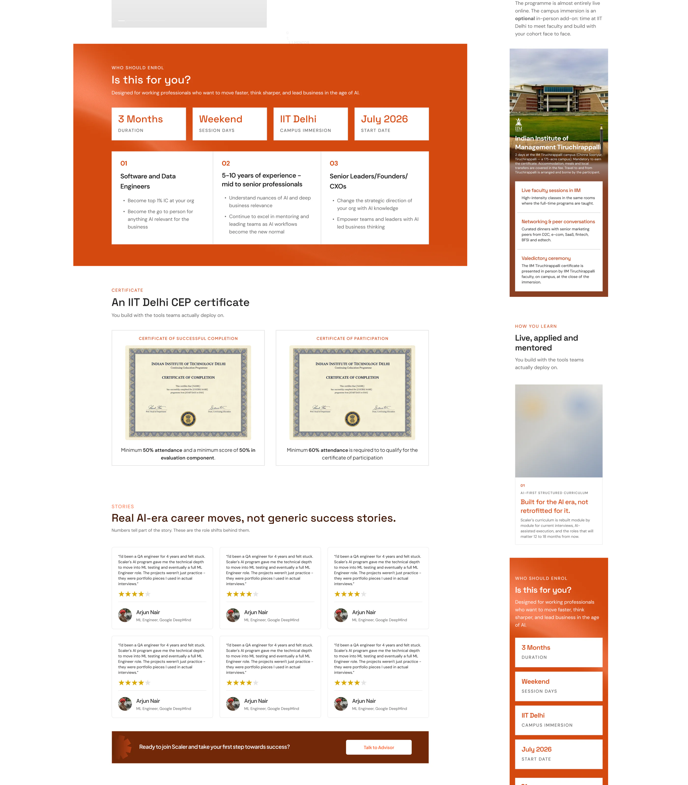
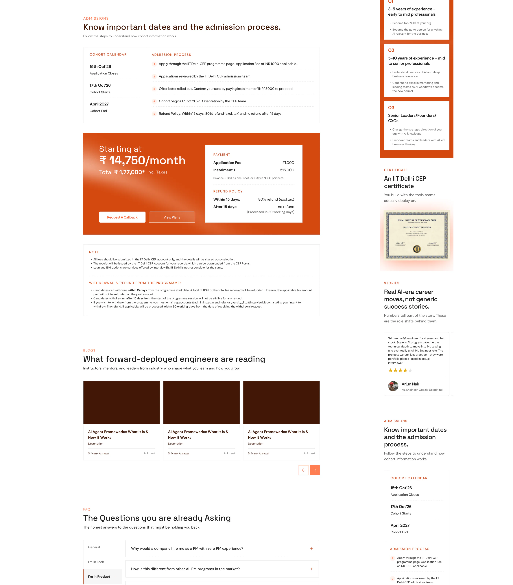
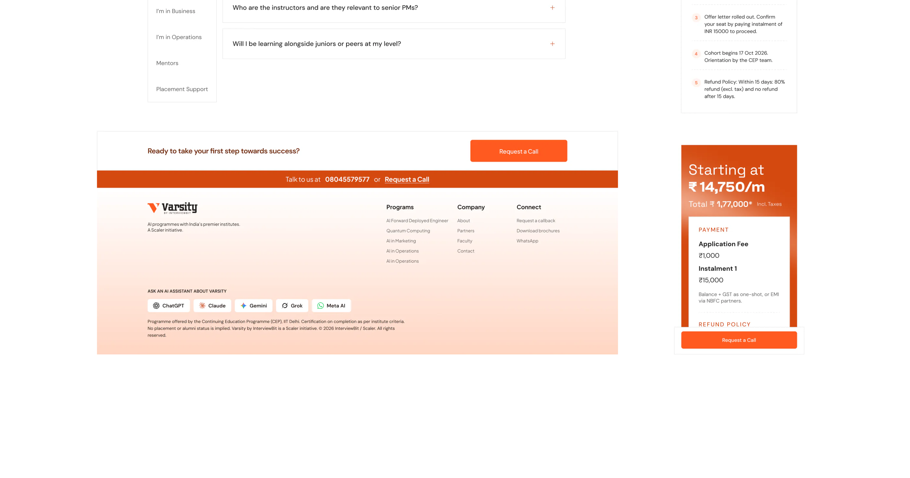
Enquiry / discovery form
Low-friction phone-first card: "JULY'26 ADMISSIONS OPEN", "Enquiry about program", WhatsApp opt-in, Terms link, default/filled/error states.
Request a Callback modal
Deeper lead form capturing full name, email, phone, graduation year, and experience.
Payment & admissions screens
Fee card, admission-process steps, refund and withdrawal copy.
Terms & Privacy
Tabbed legal pages including the Enrollment & Payment tab.
Component library
Navbar, USP cards, faculty cards, program cards, tool/vendor logos, video and explainer frames.
Enrollment funnel: discovery through the phone-only enquiry card, callback through the fuller Request-a-Callback form, and payment/admissions through fee, EMI, View Plans, CEP apply, offer, and seat-confirmation steps.
The content model is an ordered 18-section blueprint.
Keeping the order fixed makes each page feel like one product and lets the builder skill assemble any program consistently while swapping only the content.
#
Storyblok section
Purpose
1
navbar
Top navigation and primary CTA.
2
program_hero
Above-the-fold title, value proposition, and callback CTA.
3
overview_band
Scannable overview: duration, format, and key facts.
4
curriculum_section
12-module / 4-phase curriculum with nested tracks, modules, and case studies.
4b
projects_section
Optional capstone/project split out of curriculum.
5-8
CTA, objectives, faculty, tools
Conversion prompt, learning outcomes, instructors, and official tool/vendor logos.
9-13
Why now, how you learn, campus, certificate, audience
Objection handling, closing prompt, announcement strip, and footer.
Root
forms
Callback and brochure lead-capture forms.
Curriculum nesting:curriculum_section -> curriculum_track -> curriculum_module -> curriculum_case_study. Each module carries title, tag chips, duration, case studies, and a future-proof rationale.
One house design language across every page.
The reference pages establish a visual and verbal system that later pages inherit through the skill file.
Image style
Warm-copper/orange 3D concept art with cinematic glow and strictly no text. Text-prone concepts use hardened object-only prompts.
Copy voice
The copy voice is fixed on reference pages and reproduced by the builder skill so campaign copy stays consistent.
Asset split
Generated illustrations become WebP through Pillow. Vector logos remain SVG from official brand repos for crispness and brand accuracy.
Supporting design-system skills:scaler-rebrand-style keeps the Scaler 3.0 visual language consistent across colors, gradients, type, spacing, component patterns, and tone. figma-syntax-build connects product-screen work to the upstream Syntax component library.
Skill files turned judgment into reusable workflow.
The skill file is not a script dump. It carries why the work is subtle, ordered phases, credential hygiene, guard checks, brand-safety rules, and the house style.
01 / storyblok-program-page
A brochure goes in; a published, on-brand page comes out.
Builder flow
Read the brochure and extract duration, live hours, campus days, fee, GST, EMI, modules, and faculty.
Draft copy and expand modules into a 12-module / 4-phase curriculum.
Generate program-specific illustrations with Magnific MCP in the house style.
Convert to WebP with Pillow, upload through Storyblok signed-S3, wire CDN URLs, and publish.
Workflow evolution
Started draft-only, then moved to "Save & Publish after every upload" once review gates were reliable.
Added capstone detection on Jul 13 to split Capstone/Project entries into Projects section.
Maintains approval gates for content and imagery before production writes.
Go-live QA happens in the CMS and in the browser.
Publishing the story is not proof that the learner experience works. Two audit skills cover CMS content/assets and live rendered behavior.
storyblok-site-audit
Image audit flags red over 1 MB, orange 500 KB-1 MB, yellow 300-500 KB.
Optimizes to WebP, caps width at 1600 px without upscaling, re-uploads with SEO filenames, and swaps story references.
Adds descriptive alt text, social cards, SEO metadata, safe Course schema, and brand-safety checks.
Real run on Jul 6: usp_2.webp optimized from 552.7 KB to 223.1 KB (-60%), 4 alt texts added, 7 targeted changes, guard checks green.
varsity-page-audit
Added Jul 14 to test the live rendered page, not only Storyblok content.
Runs curl link audits for nav, footer/legal, sibling programs, image assets, and brochure maps keyed by institute/program.
Uses Playwright/Chromium to click Enquire Now, Request A Callback, Request a Call, and View Plans in fresh page loads.
Reviews tier-1 and tier-2 learner comprehension and calls out where learners drop off, usually curriculum or pricing.
Golden rule: production is read-only. Forms are filled/submitted only on *.staging.sclr.ac; on www.interviewbit.com, submit would inject a real lead into the live CRM.
The Projects-section pattern separated what learners build from what they are taught.
Latest addition, Jul 13, 2026: capstones stopped living inside the curriculum accordion and became their own reusable section.
Problem
Four Mini-Capstones and one Final Capstone were mixed with teaching modules inside the curriculum.
Fix
Created projects_section, projects_tab, project_card, and project_card_tag blueprints authored Jul 10.
Structure
Curriculum now has 15 pure teaching modules. Projects section has 2 tabs: Mini-Capstones and Final Capstone.
Imagery
Reused on-brand concept art, generated a new MC4 quantum-kernel image, and added a shared deliverable-strip icon.
Payment and enrollment were part of the product system.
Each partner page carries an enrollment journey: admissions block, pricing card, EMI plans, refund copy, and lead forms.
Flow piece
Details captured in the system
Admissions block
Eyebrow "Admissions", cohort calendar, application deadline, cohort start, orientation, and numbered steps.
IIT Delhi CEP steps
Apply through CEP page, ₹1,000 application fee, CEP review, offer letter, ₹15,000 seat-confirmation instalment, cohort begins 17 Oct 2026, orientation by CEP team.
Pricing card
Starting at ₹14,750/month; total ₹1,77,000 inclusive of taxes; payment via balance + GST one-shot or EMI via NBFC partners.
Compliance note
Fees submitted only to IIT Delhi CEP account; receipt issued by IIT Delhi CEP; loan and EMI offered by InterviewBit; IIT Delhi not responsible for those services.
Refund / withdrawal
Within 15 days: 80% refund excluding tax. No refund after 15 days. Withdrawal emails: cepaccounts@admin.iitd.ac.in and refunds_varsity_iitd@interviewbit.com. Eligible refund within 30 working days.
Request a Callback
Two-pane modal with branded left rail and form fields: full name, email ID, phone number with +91, graduation year, and experience in years/months.
Handoff to Marketing and SEO is the point of the system.
The design team hands over the finalized format, built content, and skill files. Growth teams can then shift copy, swap creative, re-angle sections, and keep every campaign variant on-brand.
Campaign iteration
Marketing can move sections and copy according to live campaign needs without structural drift.
V2L
Volume-to-Lead: the share of visitors who submit enquiry, callback, or lead forms.
L2P
Lead-to-Payment: the share of leads who convert into paid enrollment.
The platform constraint shaped the release architecture.
In Storyblok, each story stores the full asset URL, including format, dimensions, and content hash. Optimizing an asset creates a new URL, so changing only the asset library is not enough.
Swap the reference, don't just replace the file.Every release script must replace the URL inside the story and guard-check that only intended URLs changed.
Large writes: content objects too large to hand-transcribe (~64k) are written by POSTing JSON-RPC tools/call directly to the Storyblok HTTP-MCP endpoint from a script that reads the built content from a file, then re-fetches and deep-diffs the result byte-identical. Big writes go through a file, not the model.
Safety model: automation fixes facts; humans own voice.
Every production write is reversible, credential-safe, and checked against brand and diff rules.
Human gates
Content is approved before generation; imagery is reviewed as a candidate montage before wiring.
Copy ownership
Audit fixes images and metadata but flags visible copy and brand issues for human decision.
Write checklist
Back up story JSON, keep originals for rollback, guard-check diff, draft-first when risky, verify live after rebuild.
Brand and credentials
One space equals one brand; automation cannot introduce foreign branding. Tokens come from environment, never hardcoded.
24,541Visitors across six live Varsity pages from Jul 23–31, 2026.
2,220Leads generated across the same acquisition window.
9.05%Overall visitor-to-lead conversion across all six pages.
58Payments completed across the first two program launches by Jul 31, 2026.
Before and after.
The system changed both production speed and ownership. It moved Varsity from hand-built pages to reusable, measurable publishing operations.
Before
After
Per-program pages hand-built in raw HTML.
Program page generated from a brochure in one prompt.
Structure and image style drifted page to page.
Consistent section system and house style encoded in skill files.
Go-live defects caught late or never.
Fixed go-live audit with guard checks and live verification.
"Ready" and "released" separated by manual rework.
Save and publish in one pass once review gates are clear.
Only design or engineering could change a page.
Marketing and SEO iterate independently per campaign.
Slow to test, so the funnel stayed stuck.
Fast variants create room to lift V2L and L2P.
Current live state.
Six pages are live and published with unpublished_changes: false: home, IIT Delhi AI Engineering, IIT Delhi Quantum Computing, IIT Delhi Generative AI, IIM Trichy AI Operations, and IIM Trichy AI Marketing, plus a shared theme config story.
Page
Program
Built
Notes
iim-trichy/ai-operations
AI-Powered Operations & Process Transformation
Jun 30-Jul 2
First page built via the skill; 6 modules, 75 live hours, 12 Magnific images.
Canonical clone source; latest addition is the Projects section.
iit-delhi/ai-engineering
AI Engineering
Jun 20
Original program page.
Open items: Ops needed real IIM-Trichy lead-form backend keys; Marketing needed Programme Director photos, banner cleanup, Klaviyo/MoEngage and GEO logos, and real lead-form keys; GenAI had faculty photos pending and "Why Now" stats marked verify; Quantum needed renderer verification for projects_section.
Timeline at a glance.
The build history from the first exploratory commit to the live-page audit skill.
Jun 16Initial Varsity landing pages and design-direction variants explored.
Jun 17Format locked and consolidated into varsity-complete.html.
Jun 20iit-delhi/ai-engineering reference page created.
Jun 23iit-delhi/quantum-computing created and becomes the canonical clone source.
Jun 30-Jul 2First skill-built page: iim-trichy/ai-operations.
Jul 3iim-trichy/ai-marketing built and published; policy moved to Save & Publish after every upload.
Jul 6Design-ops case study written; storyblok-site-audit run on AI Marketing.
Jul 7iit-delhi/generative-ai built and published.
Jul 10Read-only audit of all pages vs skill; projects_* blueprints created.
Jul 13Projects section added to Quantum; builder skill updated with capstone split.
Jul 14varsity-page-audit created for live-page links, CTAs, and persona comprehension.
Key decisions and learnings.
The takeaways that made the system repeatable, safe, and useful to growth teams.
Process over template
The documented workflow paid off more than a static design file.
Handoff artifact
The skill file lets another team reproduce design and engineering decisions.
Platform constraints
Storyblok's URL-baked assets shaped the reference-swap model.
Right human gates
Content and imagery gates kept quality high without blocking mechanical execution.
Human voice
Automation fixes factual and metadata issues; humans own visible copy and tone.
File-based writes
Large content objects go through a file and deep-diff, never hand transcription.
Funnel over launch
The system exists to move V2L and L2P, not just to publish faster.
Stack, tools, and glossary.
The system combines design tools, CMS mechanics, image generation, optimization, QA, and growth ownership.
Stack
Claude + rapid HTML prototypes
Figma + Syntax component library
Storyblok EU space
Storyblok Management API and signed-S3 uploads
scaler-rebrand-style and figma-syntax-build
Production tools
Magnific MCP for imagery
Pillow for WebP conversion
Official SVG logo sources
HTTP-MCP for large writes
QA and growth
WebP optimization up to 1600 px
SEO filenames and alt text
Playwright CTA modal tests
Marketing and SEO own V2L/L2P iteration
Term
Meaning
Skill file
Decision-encoded playbook that lets one prompt reproduce a team's decisions.
Blok / component
Reusable Storyblok content block; pages are an ordered stack of these.
Reference swap
Replacing an asset URL inside the story because the URL is baked into Storyblok content.
Guard check
Assertion that scripted edits changed only intended fields or URLs.
Draft-first
Saving without publishing when a write is risky so humans can review first.
OG image
1200 x 630 social share card rendered with real fonts, not AI-generated text.
Signed-S3 flow
Storyblok asset upload mechanism using a signed URL and finalize step.
HTTP-MCP write
JSON-RPC tools/call posted directly to the Storyblok MCP endpoint for large content writes.